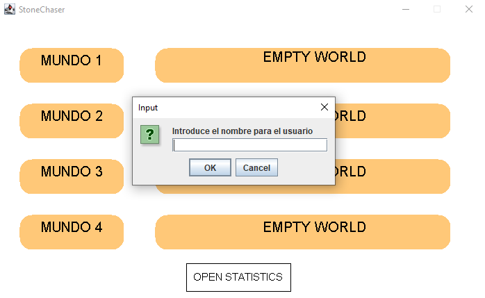
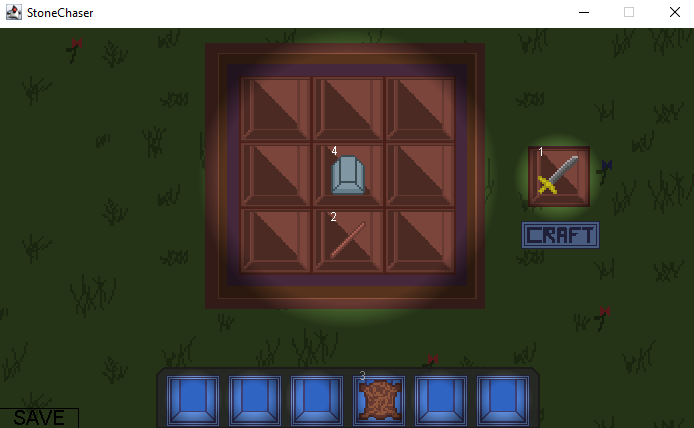
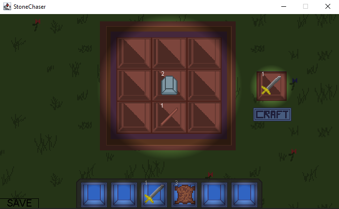
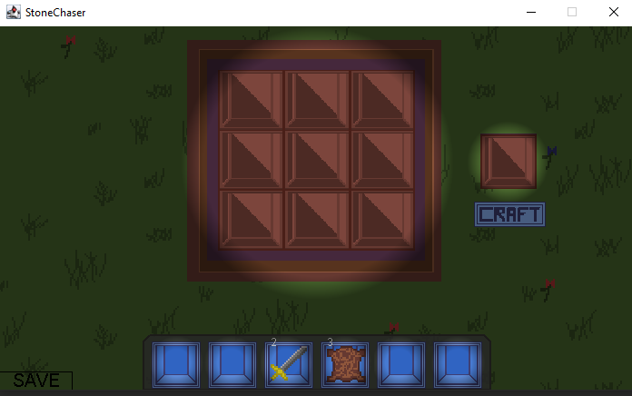

Se puede
estoy acáa
Creación de items: ejemplo de fabricación de una espada en la mesa de crafteo
Aquí podemos ver la mesa de crafteo. Es una cuadrícula de 3x3, en la que podemos poner items que hayamos conseguido por el mundo para intercambiarlos por herramientas más útiles que nos servirán para facilitarnos la experiencia. Nadie quiere tener que enfrentarse a un enemigo estando desarmado, por eso vamos a enseñar cómo se fabrica una espada. Para empezar, se necesitan los materiales necesarios para poder fabricar cualquier herramienta en el juego. Dado que vamos a hacer una espada de hierro, necesitamos por lo menos un palo y dos lingotes de hierro. Como podemos ver en la foto, ya tenemos de sobra en el inventario.
Ahora colocamos los palos y los lingotes de hierro en el inventario. Hemos puesto dos palos y cuatro lingotes, lo cuál debería de darnos para fabricar dos espadas. Eso si, no vale sólo con poner los items en la mesa de crafteo, estos hay que ponerlos en cierta disposición para indicar que queremos hacer una espada y no otro tipo de herramienta que requiriese los mismos items. Una vez colocamos los lingotes en el centro, y los palos justo debajo de estos, aparecerá en la derecha la imagen de una espada. Esta no estará disponible hasta que se presione el botón "CRAFT". Una vez sea presionado, se consumirán dos lingotes de hierro y un palo, y la espada de hierro se colocará inmediatamente en el primer hueco libre de nuestro inventario.
Como podemos observar en esta imagen, la espada ha sido creada y está en nuestro inventario, y han sido consumidos la cantidad de un palo y dos lingotes de hierro. Si quisiéramos craftear una segunda espada, para cuando esta primera se rompa, podríamos darle otra vez al botón "CRAFT" y esta se colocará encima de la ya crafteada. Cuando vamos a añadir algo al inventario, el juego busca automáticamente a ver si este item está ya en el inventario. Si está, lo stackea encima de el otro para que no ocupe un hueco innecesario en el inventario.
Aquí vemos como se ha crafteado la segunda espada, nos hemos quedado sin hierro y palos y esta segunda espada se muestra encima de la primera, correctamente stacked.